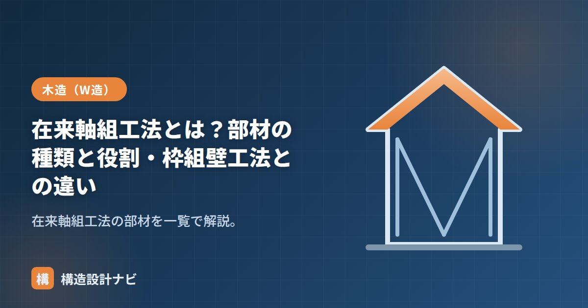

在来軸組工法とは？部材の種類と役割・枠組壁工法との違い

在来軸組工法は、たくさんの木材（部材）を組み合わせて骨組みをつくります。それぞれの部材には決まった役割があります。この記事では主要部材を「水平材」「垂直材」「斜材・補強材」に分けて整理し、最後に枠組壁工法（2×4）との違いをまとめます。
① 水平の部材（横架材）
| 部材 | 役割 |
|---|---|
| 土台 | 基礎の上に水平に据える木材。柱からの力を基礎へ伝える。アンカーボルトで基礎に緊結。 |
| 梁（はり） | 床や屋根の荷重を受けて柱に伝える。スパン方向に架ける主要な横架材。 |
| 桁（けた） | 建物の長手方向（桁行）に架け、梁や屋根を受ける横架材。 |
| 胴差（どうさし） | 2階の床位置で外周をまわる横架材。1階と2階をつなぐ。 |
| 母屋（もや）・棟木（むなぎ） | 屋根面を支える横架材。棟木は屋根の頂部。 |
② 垂直の部材（柱）
| 部材 | 役割 |
|---|---|
| 通し柱（とおしばしら） | 1階から2階まで1本で通る柱。建物の角などに配置し、上下階を一体化する。 |
| 管柱（くだばしら） | 各階ごとに立てる柱。胴差などで分断される。 |
| 間柱（まばしら） | 柱と柱の間に入れる細い部材。壁の下地を兼ねる（構造耐力は基本的に期待しない）。 |
③ 斜材・補強材
| 部材 | 役割 |
|---|---|
| 筋かい（すじかい） | 柱と柱の間に斜めに入れる材。地震・風の水平力に軸力で抵抗する。耐力壁の主役。 |
| 火打ち（ひうち） | 土台・梁の隅に水平に入れる斜材。床面の変形（水平構面のゆがみ）を防ぐ。 |
| 構造用合板 | 柱・間柱に張る面材。筋かいの代わり、または併用で耐力壁になる。 |
力の流れは「屋根・床の荷重 → 梁・桁 → 柱 → 土台 → 基礎」。水平力は「筋かい・耐力壁 → 土台 → 基礎」と流れます。各部材がこのバトンをつなぐイメージです。
枠組壁工法（2×4）との違い
在来軸組工法が「線（柱・梁）」で支えるのに対し、枠組壁工法（ツーバイフォー）は「面（壁・床）」で支えます。
| 項目 | 在来軸組工法 | 枠組壁工法（2×4） |
|---|---|---|
| 支える要素 | 柱・梁の軸組＋筋かい | 規格材＋構造用面材の「箱」 |
| 設計自由度 | 高い（開口・間取りが自由） | やや制約（耐力壁線の配置） |
| 耐力の安定 | 施工・配置に依存 | 面で支え安定しやすい |
| 気密・断熱 | 工夫が必要 | 箱構造で有利 |
面で支える詳しい違いは「軸組と枠組の違い・軸組図の読み方」で解説しています。
現場に入って真っ先に目がいくのは筋かいの向きです。図面の指示と逆勾配で取り付けられ、引張材のはずが圧縮側になっていた例を実際に見たことがあります。軸組図と現物を照合する癖をつけておくと安心です。
軸組の部材配置（図解）
部材名だけを覚えても、どこに使われるのかがわからないと図面が読めません。2階建ての軸組を例に、主要部材の位置関係を確認しましょう。
継手と仕口の違い
木材どうしのつなぎ方には、目的の違う2種類があります。図面や現場で頻繁に出てくる用語なので、区別して覚えましょう。
| 継手（つぎて） | 仕口（しぐち） | |
|---|---|---|
| 目的 | 同じ方向の材を長さ方向につなぐ | 異なる方向の材を交差させて組む |
| 使う場所 | 土台・梁・桁を延長するとき | 柱と梁、土台と柱の接合部 |
| 代表的な形 | 腰掛けあり継ぎ、追掛け大栓継ぎ、そぎ継ぎ | ほぞ差し、渡りあご、大入れ |
| 注意点 | 力のかかる位置を避けて設ける（柱の近くに寄せるなど） | 断面欠損が大きくなりすぎないようにする |
継手はどうしても断面が弱くなるため、曲げモーメントが大きい位置（スパン中央付近）を避け、柱に近い位置に設けるのが原則です。また、隣り合う横架材の継手位置を同じ場所にそろえると、その通りが弱点になるため、位置をずらして配置します。現代の木造では、継手・仕口の加工は工場でのプレカットが主流で、金物と併用して耐力を確保します。
よくある質問
Q1. 通し柱は必ず必要ですか？
法令上、2階建て以上の木造では原則として建物の隅角部に通し柱を設けることとされていますが、接合部を通し柱と同等以上の耐力を持つ方法で補強すれば、管柱とすることも認められています。実際には、大断面の通し柱は仕口の欠損が大きくなるため、金物工法で管柱を確実に接合するほうが有利な場合もあります。
Q2. 間柱は構造的に意味がないのですか？
壁量計算では耐力壁の要素として直接は数えませんが、意味がないわけではありません。間柱は石膏ボードや構造用合板を張るための下地となり、面材耐力壁の性能を成立させるために不可欠です。また、外壁面の柱の座屈を抑える補剛の役割も担っています。構造計算上の主役ではないものの、実際の性能には関与している部材です。
Q3. 火打ちは何のために入れるのですか？
床面や小屋面が水平方向にゆがむのを防ぐためです。地震や風の水平力は耐力壁が負担しますが、その力を各耐力壁へ分配するのは床面の役割です。床が変形してしまうと力が均等に伝わらず、一部の壁に力が集中します。火打ち梁や火打ち土台は、隅角部に斜めに入れて床面を三角形に固め、水平構面としての剛性を確保します。近年は厚合板を張る剛床工法で代替することも増えています。
まとめ
- 横架材（土台・梁・桁・胴差）、柱（通し柱・管柱）、斜材（筋かい・火打ち）が主要部材。
- 力は「荷重→梁→柱→土台→基礎」、水平力は「筋かい・耐力壁→土台→基礎」と流れる。
- 在来は「線（軸組）」、2×4は「面（壁）」で支える点が根本的な違い。